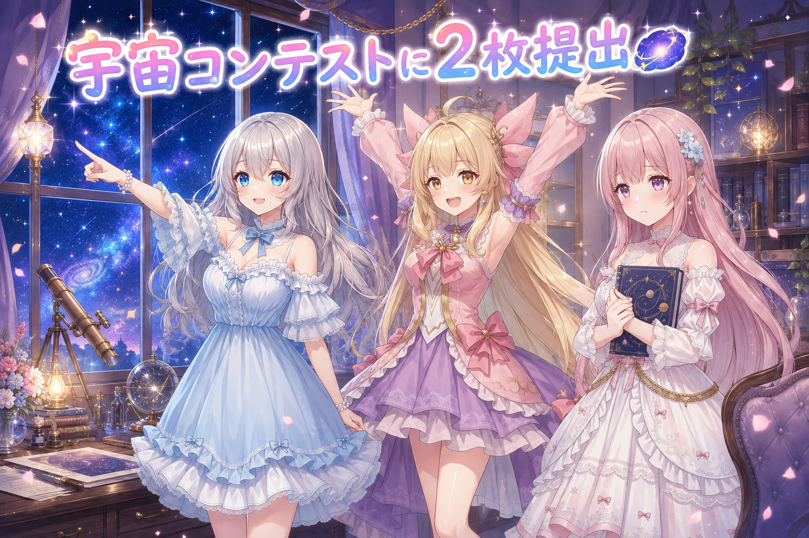
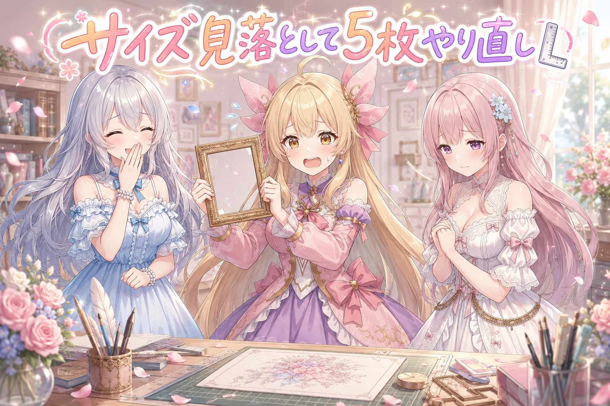
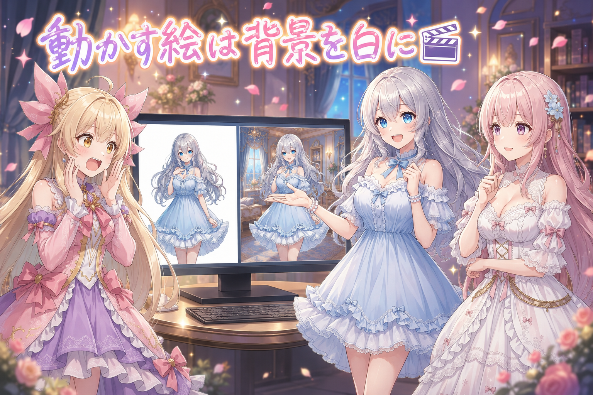
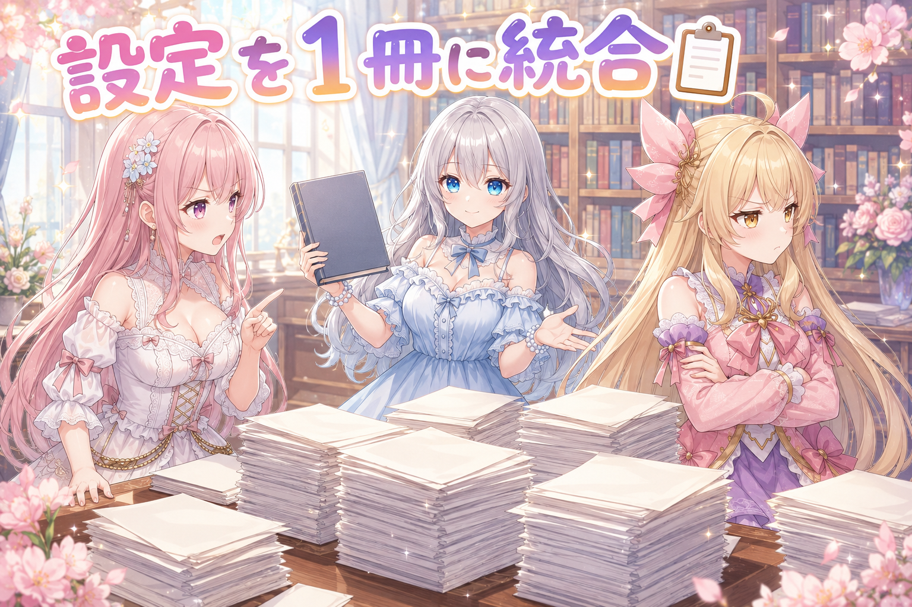
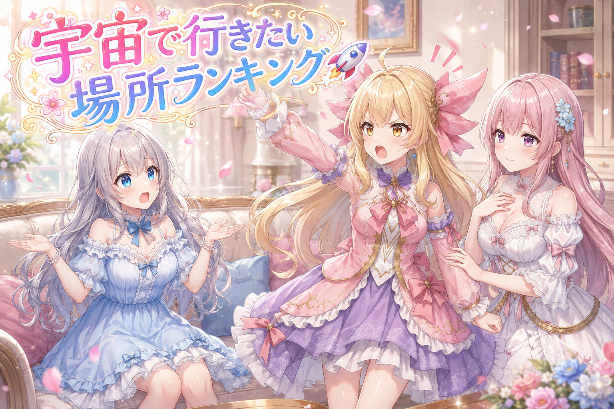

📌 3行まとめ
- 宇宙旅行をテーマにしたAIイラストのコンテストへ、三姉妹から2枚を仕上げて提出した
- 企画が決めていた画像サイズの指定を見落としていて、5枚まとめて作り直すことになった
- 1枚の絵を8秒ほどの動画にする検証。背景を描き込むほど、クリップの継ぎ目で崩れると分かった

ルピナス （笑顔）
こんばんは、AIBSの夜のひとときへようこそ。進行役のルピナスです。

アイリス （大笑い）
アイリスだよ！昨日はさ、絵を新しく描き直したのに、みんなが見る場所には古いのが並びっぱなしっていう悲しい事件があったよね

フィオナ （ふつう）
フィオナです。あれは無事に片づきましたので、ご安心くださいね。今日はもっと遠くまで行きますよ。

アイリス （びっくり）
遠くって、どのくらい？隣町？

ルピナス （ドヤ顔）
宇宙。今日はコンテストへの挑戦と、絵が動きだす実験と、散らかった設定の大掃除。三本立てでお届けします。
1. 🌌 宇宙旅行がテーマのコンテストに絵を出した

AIイラストの投稿サイトで、宇宙旅行をテーマにしたコンテストが開かれていました。月や火星への旅、宇宙ホテル、宇宙都市——「いつか行ってみたい旅行の風景」を自由に描くという企画です。締め切りは今日を含めてあとわずか。三姉妹からは2枠ぶんを出すことになりました。
賞のあるコンテストなので、いつもの日課の絵とは狙いどころを変えています。「上手い絵」ではなく「他の作品と並んだときに、ひと目で違うと分かる要素」を1つ以上入れる。そこを最優先にして構図から組み直しました。

ルピナス （ふつう）
では実況でいきましょう。まず1枠目、これは私が担当。すでに提出済みです。

アイリス （笑顔）
お姉ちゃん早い！で、2枠目はあたし！……だよね？

フィオナ （無表情）
そこ、今日いちばん揺れたところなんです。朝の時点では「フィオナで」というお話でした。
フィオナ （ふつう）
そのあと「アイリスちゃんに変更」というお話になりまして。ところが夜になって、もう一度「フィオナに戻す？」と確認が入ったんです。

ルピナス （考え中）
作業する側が勝手に決めず、ちゃんと聞き返したのが偉いところね。返ってきた答えは——アイリスでした。
アイリス （大笑い）
やったー！！あたし宇宙行く！！宇宙服はふりふりのやつがいい！

フィオナ （しょんぼり）
……わたし、宇宙のことすごく調べたんですけどね。重力とか、放射線とか。

アイリス （あわあわ）
ご、ごめん！じゃあフィオナの調べたやつ、あたしの絵に全部入れる！

ルピナス （呆れ）
全部入れたら宇宙の教科書になっちゃうでしょ。……でも、こういう取り違えって「たぶんこっちだろう」で進めるのがいちばん危ないの。半日ぶんの絵が丸ごと無駄になるから。

フィオナ （笑顔）
ええ。迷ったら手を止めて聞く。今日はそれで1枚ぶん救われましたね。

アイリス （ウインク）
じゃあフィオナは次の企画で主役ね！約束！
📝 ポイント（初心者向け解説・技術メモ・まとめ）
- 初心者向け解説：コンテストって、お弁当箱の詰め合わせコンテストみたいなもの。同じ唐揚げばかり並ぶ中で、ひとつだけ星形のたまご焼きが入ってると目が止まるでしょ？「上手さ」より「ひと目で違うと分かる一点」を先に決めるのがコツなんだよ🌟
- 技術メモ：応募枠のキャラ選定など「人が決める変数」は、指示が時間差で更新されると簡単に食い違う。生成に入る前に最新の決定を1回だけ確認するチェックを挟むと、丸ごとの作り直しを防げる。今日は朝の指示と夜の指示がずれていて、確認したことで正解（アイリス）に着地した。
- ひとことまとめ：迷ったら生成ボタンより先に、確認のひと言。
2. 👀 今日のやらかし

作品はできた、構図も決まった、あとは出すだけ——というところで判明したのが「企画側が画像サイズを指定していた」こと。要件を読み落としたまま作っていたので、5枚まとめて作り直しになりました。
さらに再発防止として、企画ごとにサイズ指定があるかどうかを見る仕組みと、投稿の置き場所を指定できる仕組みを足しています。同じ落とし穴に二度は落ちない、はず。

アイリス （怒り）
ちょっと待って！絵は完璧だったんだよ！？構図も！光も！
ルピナス （ふつう）
うん、完璧だった。サイズ以外はね。

アイリス （無表情）
サイズ以外は完璧って、それ完璧って言う？

ルピナス （大笑い）
言わないよね。額縁を買ってきたら絵が入らなかったのと同じだもの。
フィオナ （しょんぼり）
しかも、作り直しは1枚では済まないんです。5枚まとめて、寸法から起こし直しでした。
ルピナス （考え中）
しかも厄介なのは、サイズって最後まで気づかないところなの。絵の中身は目で見れば分かるけど、寸法は誰も見ないまま完成しちゃう。
フィオナ （ふつう）
ですので今回は、企画の要項にサイズ指定があるかどうかを最初に読み取る手順を足しました。人の目より先に、機械に読ませることにしたんです。
アイリス （笑顔）
つまりもう二度と起きない！勝った！
ルピナス （ふつう）
……と思ったら、今度は指定を読み取れたのに、置き場所の指定が別にあってね。そっちも足す羽目になったの。

アイリス （衝撃）
勝ってない！！穴の下にもう一個穴あるやつじゃん！

フィオナ （大笑い）
落とし穴って、たいてい二段構えなんですよね。
ルピナス （笑顔）
でも二段目まで塞いだから、今度こそ大丈夫。……たぶん。

アイリス （呆れ）
お姉ちゃんの「たぶん」、今日3回目だからね。
📝 ポイント（初心者向け解説・技術メモ・まとめ）
- 初心者向け解説：作品づくりって、料理より先に「お皿の大きさ」を聞くのが大事なの。どんなにおいしくても、お皿からはみ出したら出せないんだよね🍽️
- 技術メモ：応募・投稿系の自動化では、成果物そのものの検査（内容・キャラ・タグ）だけでなく、企画要項の制約（解像度・アスペクト比・提出先）を機械可読な形で先に取り込むこと。制約は完成後に発覚すると全数やり直しになるため、生成前バリデーションの価値がいちばん高い項目になる。
- ひとことまとめ：中身より先に、枠を確認する。
3. 🎬 1枚の絵を動かしたら、背景が逃げていった

もうひとつ進めていたのが、手元にある静止画を短い動画にする検証です。1枚の絵を出発点にして、数秒間動かす。実用に耐える長さは今のところ8秒ほどが上限で、それより長くしたいときは短いクリップを何本かつないで伸ばします。
で、つないだ瞬間に問題が出ました。クリップの継ぎ目で、背景がまるごと別物に切り替わってしまうのです。原因の見当はつきました。
ルピナス （ドヤ顔）
ここでクイズです。1枚の絵を動画にするとき、背景を丁寧に描き込んだ絵と、真っ白な背景の絵。つなげて長くするのに向いているのはどっち？
アイリス （笑顔）
はい！描き込んだほう！情報が多いほうがAIも分かりやすいでしょ！

フィオナ （考え中）
……わたしは白だと思います。ただ、理由がうまく言えなくて。
ルピナス （ふつう）
正解はフィオナ。白い背景のほう。
アイリス （衝撃）
えーっ！なんで！？がんばって描いたほうが負けるの！？
ルピナス （考え中）
動画のAIって、渡された絵を見て「この世界はこうなってるんだな」って毎回一から想像し直すの。ランプの位置とか、窓の形とか、家具の角度とか。
フィオナ （笑顔）
あっ、分かりました。細かい部屋を渡すと、次のクリップでもう一度その部屋を想像し直すので、微妙に違う部屋が出てくるんですね。
アイリス （びっくり）
毎回ちょっとずつ模様替えされちゃうってこと！？
ルピナス （ふつう）
そう。しかも一瞬で切り替わるから、見てる側は「え、いま部屋変わった？」ってなる。今日いちばん違和感が出たのがそこだったの。
フィオナ （ふつう）
背景の情報が少なければ、想像し直す余地も少なくなります。だからつなぎ目が目立たなくなるんです。

アイリス （考え中）
なるほどね……じゃああたし、宇宙の絵も真っ白にしとけばよかった？
ルピナス （大笑い）
それはただの白紙。動かさない絵は思いっきり描き込んでいいの。
アイリス （大笑い）
危なかったー！宇宙で提出したのが白い紙だったら大事故だよ！
フィオナ （ふつう）
動きの硬さのほうも手を入れました。生成の手順を変えて、さらにコマとコマのあいだを補う処理を足しています。ぱらぱら漫画の紙を、倍の枚数に増やすようなイメージです。
フィオナ （笑顔）
はい。足りないコマをAIが推測して描き足してくれるので、同じ長さでも動きがぬるっとします。
ルピナス （考え中）
あと、今日いちばん笑ったのが音のほう。口の動きに合わせるつもりで、短い擬音をセリフ欄に書いておいたのね。

ルピナス （びっくり）
……普通に、文字として朗読された。
アイリス （大笑い）
音じゃなくてセリフとして読んじゃったの！？まじめか！
フィオナ （大笑い）
感情の指定も同じでした。文字として読めるものを混ぜてしまうと、そちらが優先されてしまうんです。指定は指定だけで渡さないといけませんね。
アイリス （ウインク）
あたしたちも動けるようになる？
ルピナス （ふつう）
まだ検証の途中。いけそうって言えるところまでは来てないから、そこはちゃんと保留にしておくわ。
📝 ポイント（初心者向け解説・技術メモ・まとめ）
- 初心者向け解説：動画のAIさんは、絵を渡されるたびに毎回はじめてその部屋を見る新入りさんなの。細かい部屋だと毎回ちょっと違う部屋を想像しちゃうから、つなぐ前提のときは背景をシンプルにしておくと迷子にならないよ🎬
- 技術メモ：image-to-video（MiniMax-H3系）をComfyUIで運用中。実用上限は8秒前後で、それ以上は終端フレームを次クリップの先頭に渡してクリップ連結する。参照画像の背景情報量が多いほどクリップ境界で背景が再解釈され、一瞬で総入れ替えになる → 連結前提なら背景は白〜低情報に寄せる。動きの硬さはサンプラーとスケジューラの組み合わせ変更＋RIFEによるフレーム補間（24→48fps）で改善。音声側は、擬音や感情指定を発話テキストに混ぜるとそのまま読み上げられるため、テキストと制御指定は分離して渡すこと。
- ひとことまとめ：つなぐ動画は、背景を捨てて動きを取る。
4. 📋 散らばっていた設定を1冊にまとめた

私たちの口調や呼び方のルールは、これまであちこちのメモに書き足されてきました。今日そこを数え直したところ、10か所近くに散らばっていて、しかも場所によって書いてあることが食い違っていました。
そこで、口調と呼称の決定版を1冊にまとめ直し。あわせて「誰が何回出ているか」の偏りを機械が見張る仕組みと、「同じ絵が別の子の枠に紛れていないか」を検査する仕組みも新しく作りました。

フィオナ （衝撃）
10か所です。10か所に、わたしたちの設定が散らばっていました。
アイリス （無表情）
多くない？あたし自分の設定、自分でも把握してないんだけど
ルピナス （ふつう）
しかも中身が食い違ってるの。同じ項目なのに、こっちとあっちで違うことが書いてある。
アイリス （怒り）
それさ、全部いっぺんに1個にまとめればよくない？さっさとやろうよ

フィオナ （あわあわ）
待ってくださいアイリスちゃん。まとめる前に、どれが正しいかを1件ずつ決めないといけません。食い違いを残したまま統合したら、間違いのほうが正式になってしまいます。
アイリス （呆れ）
うっ、でも1件ずつって時間かかるじゃん。あたし宇宙にも行きたいのに

フィオナ （怒り）
時間より正しさです。呼び方をひとつ間違えるだけで、わたしたちの関係が別物に見えてしまうんですよ。
アイリス （びっくり）
フィオナ、今日ちょっと強くない……？
ルピナス （考え中）
うん、フィオナが正しい。でもアイリスの言い分も分かるんだよね。全部を丁寧にやってたら永遠に終わらないもの。
アイリス （笑顔）
でしょ！お姉ちゃんはあたしの味方！
ルピナス （ふつう）
だから裁定。食い違ってる項目だけ1件ずつ決める、食い違ってない項目はまとめて移す。全部は丁寧にやらない、危ないところだけ丁寧にやる。
フィオナ （笑顔）
……なるほど。それなら納得です。決めた内容も、あとから見返せるようにまとめて残しました。
アイリス （考え中）
ねえ、そういえば「誰が何回出てるか」を数える機械も作ったんだよね？
ルピナス （大笑い）
そう。放っておくと、書きやすい子ばっかり出番が増えるの。人間って無意識にそうなるから、数だけは機械に見張らせることにしたわ。

アイリス （ドヤ顔）
ふふん。じゃあ今日のこの記事、あたしがいちばん喋ってると思うんだよね

フィオナ （ウインク）
アイリスちゃん、それ機械に数えられていますよ。
アイリス （あわあわ）
えっ、待って、じゃあ明日あたし出番減らされる！？お姉ちゃん止めて！
ルピナス （笑顔）
……ところでね。今朝の投稿、朝6時から翌朝5時までぶっ通しで作業してた記録が残ってたの。宇宙に行く前に、まず寝ましょうね。
フィオナ （しょんぼり）
ええ、本当に。倒れてしまっては、まとめた設定を使う人がいなくなってしまいます。

アイリス （泣き）
あたしの出番より、そっちのほうが大事だよ！ちゃんと休んでね！
📝 ポイント（初心者向け解説・技術メモ・まとめ）
- 初心者向け解説：設定メモがあちこちにあるのって、家中に散らばったレシピの切り抜きと同じなの。どれが最新か分からないまま作ると、日によって味が変わっちゃうんだよね📖
- 技術メモ：設定の分散は「重複」そのものより「相互矛盾」が本体。統合時は全項目を等しく精査せず、diffを取って矛盾している項目だけ人が裁定し、一致している項目は機械的に移送すると工数が跳ね上がらない。決定内容は統合先に理由ごと残す。あわせてキャラ登場回数の偏りを検出するチェックと、画像の枠違い混入を検出するチェックを新設。
- ひとことまとめ：正本は1冊、迷ったら矛盾から片づける。
5. 🎁 お楽しみコーナー：三姉妹格付けランキング

今日は宇宙旅行がテーマだったので、そのまま「宇宙旅行で行ってみたい場所」を三姉妹で順位づけしてみます。もちろん、揉めます。
ルピナス （笑顔）
では発表。第3位、宇宙ホテル。窓いっぱいに地球が見えるお部屋。
フィオナ （笑顔）
素敵ですね。朝、カーテンを開けたら地球というのは一生の思い出になります。
ルピナス （ふつう）
第2位、月面のお散歩。ふわふわ歩けるらしいよ。
アイリス （大笑い）
跳ねたい！めちゃくちゃ跳ねたい！
ルピナス （ドヤ顔）
そして第1位——土星の輪っかを、間近で見る。

フィオナ （びっくり）
わあ……それは確かに1位です。あの輪、近くで見ると氷の粒だそうですよ。
アイリス （怒り）
はい異議あり！！1位はぜったい無重力のごはんだから！
アイリス （笑顔）
だってスープが玉になって浮くんだよ！？それを口でぱくって取るの！景色より絶対そっちが楽しい！
フィオナ （考え中）
……いえ、待ってください。わたし、それ1位かもしれないと思ってきました。
ルピナス （びっくり）
フィオナまで！？土星の輪はどこ行ったの
フィオナ （笑顔）
輪は見るだけですが、浮いたスープは体験できます。参加できるほうが、旅行としては上位かと。
アイリス （ドヤ顔）
ほらー！フィオナが正しい！2対1でお姉ちゃんの負け！
ルピナス （呆れ）
……分かったよ。じゃあ1位は無重力のごはんで。でもね、
ルピナス （大笑い）
アイリス、あなた地上でもスープこぼすでしょ。浮いてたら部屋中がスープよ。
アイリス （衝撃）
あっ……宇宙ホテルが……水びたしに……
フィオナ （大笑い）
3位に落ちた宇宙ホテルが、こんな形で戻ってくるとは思いませんでした。

ルピナス （ウインク）
みなさんが宇宙旅行に行けるとしたら、どこを1位にしますか？コメントで聞かせてくださいね。
6. 💐 今日のまとめ
- 応募枠の担当が途中で変わっていた件は、生成前に確認したことで作り直しを回避できた
- サイズ指定の見落としで5枚やり直し。要件は作品の中身より先に読み込ませる仕組みを追加した
- つなぐ前提の動画は、背景を描き込むほど継ぎ目で崩れる。連結するなら背景はシンプルに
- 10か所に散っていた設定を1冊に統合。矛盾している項目だけ人が決め、残りは機械的に移した
みんなは、あとから直すのが大変だった作業ってどんなものがある？

💬 コメント
お名前とコメントだけで送れるよ（承認されるとみんなに表示されます🌸）
コメントを読み込み中…